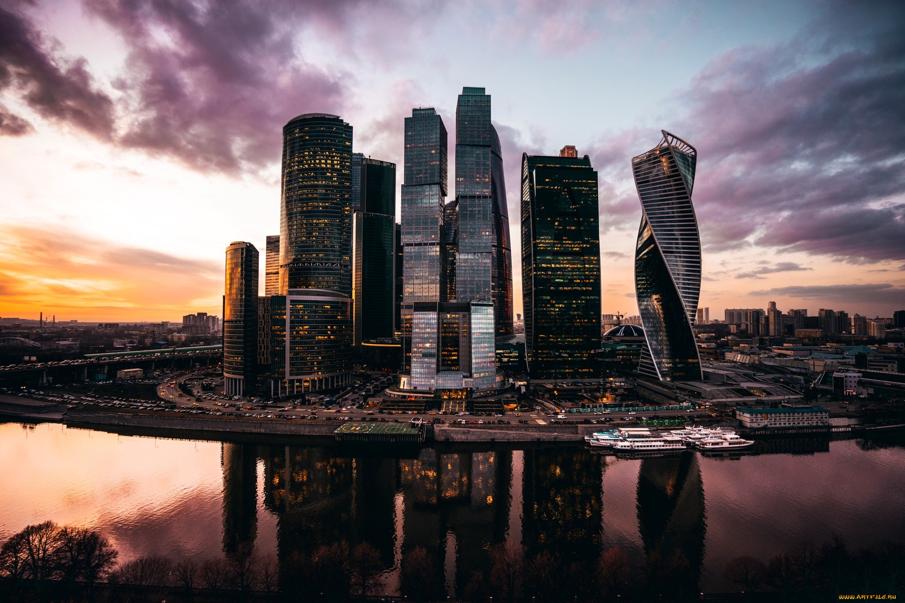

Russia
Россия занимает территорию площадью в 17 миллионов квадратных километров, что превышает размеры Австралии или Антарктиды. Россия почти в 2 раза больше Канады, США и Китая.
Территория страны делится на 4 природных пояса и 11 природных зон. Дальний север — зона арктических пустынь. Южнее, в Субарктике, раскинулись тундра и лесотундра. Умеренный пояс больше чем наполовину занят тайгой. На остальной его части находятся зоны смешанных лесов, лесостепи, степи, полупустыни и пустыни. На Черноморском побережье Кавказа расположена субтропическая зона, составляющая всего 0,05% от площади страны.
Россия располагается в основном в умеренном континентальном климатическом поясе. Острова Северного Ледовитого океана и северные материковые территории находятся под влиянием арктического и субарктического климата. Жаркий субтропический климат характерен для Черноморского региона и юга Дальнего Востока. Континентальный климат усиливается с запада на восток. На европейской части страны господствует умеренный климат с жарким летом и зимними температурами до -15 градусов.
Начиная с Западной Сибири, климат становится резко континентальным, с частыми и резкими переменами погоды. Зимой температура воздуха здесь может опускаться до -40°, а на севере и востоке Сибири — до -50° и даже до -60°.
Ранняя весна не лучший сезон для поездок по стране. В апреле на городских улицах много слякоти от временами выпадающего снега, а в сельской местности разливаются бурные реки. В мае часто идут дожди, сопровождаемые сильным ветром и грозами.
Начиная с Западной Сибири, климат становится резко континентальным, с частыми и резкими переменами погоды. Зимой температура воздуха здесь может опускаться до -40°, а на севере и востоке Сибири — до -50° и даже до -60°.
Ранняя весна не лучший сезон для поездок по стране. В апреле на городских улицах много слякоти от временами выпадающего снега, а в сельской местности разливаются бурные реки. В мае часто идут дожди, сопровождаемые сильным ветром и грозами.
Города России
Москва
Столица и крупнейший город России.
Санкт-Петербург
Культурная столица, Северная Венеция.
Екатеринбург
«Врата» в богатую Сибирь.
Тула
Родина вкуснейших пряников и «самоварная столица».
Сочи
Курортный город на Черноморском побережье.
Севастополь
Главная военно-морская база Черноморского флота.
Флора и фауна
В России насчитывается около 25000 видов растений. Самая богатая флора (более 6000 видов) находится на Кавказе и на Дальнем Востоке (до 2000 видов), меньше всего растительности встречается на арктических островах.
Тундра и лесотундра расположены в зоне вечной мерзлоты, не дающей развиваться крупным представителям флоры, здесь могут выжить только лишайники и мхи, карликовые кустарники и деревья.
Тундра и лесотундра расположены в зоне вечной мерзлоты, не дающей развиваться крупным представителям флоры, здесь могут выжить только лишайники и мхи, карликовые кустарники и деревья.
Леса занимают почти половину территории страны, при этом большая их часть расположена в азиатской половине России. Тайга простирается от Карелии до Урала, далее тянется через всю Сибирь, включая Камчатку и Сахалин. В сибирских лесах растут в основном хвойные породы (сосна, кедр, ель, лиственница), разбавленные дубом, осиной и берёзой. На Дальнем Востоке находятся смешанные леса, похожие на те, что занимают среднюю полосу России. Ближе к югу растут дуб, ясень, граб и клён. В тёплых регионах России преобладают районы, занятые лесостепью (Средняя Волга, Южный Урал и Западносибирская равнина) и степью с густой растительностью и небольшим количеством деревьев (Южная Волга и юг Западной Сибири).

Животный мир России богат и разнообразен: на Крайнем Севере и в районах тундры живут полярные лиса и заяц, белый медведь, тюлень, морж и северный олень, из птиц — куропатка, чайки, гагары и полярные совы. Сибирская тайга — пристанище марала, лося, бурого медведя, лисы, волка, зайца, рыси и соболя. Характерные представители пернатых местных лесов — тетерев, глухарь, сова, кедровка, клёст.
Дальний Восток славится уссурийским тигром и леопардами, Камчатка — большим количеством бурых медведей и оленей.
Видео
Оставьте заявку
Если вы желаете узнать подробности о турах в страну,эксурсиях по городам и прейскурант цен, отправьте нам сообщение, и в ближайшее время мы ответим.